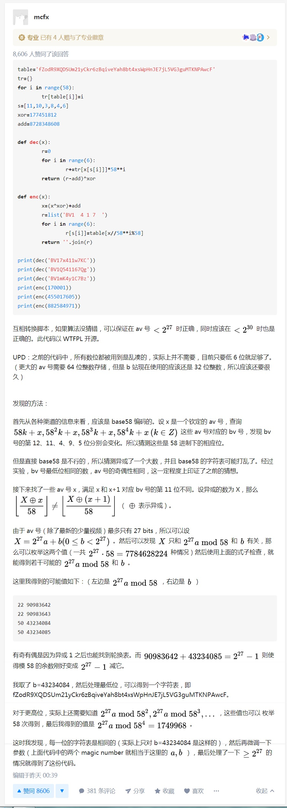

前言
昨天用you-get下视频的时候失败了，才发现B站把AV号换成了BV号，查看源码之后找到了AV号，稍晚些看到有人已经分析出算法了，甚至插件都有了，还有人做了在线转换工具？这里将原作者的算法以及分析过程做备份。
table='fZodR9XQDSUm21yCkr6zBqiveYah8bt4xsWpHnJE7jL5VG3guMTKNPAwcF'
tr={}
for i in range(58):
tr[table[i]]=i
s=[11,10,3,8,4,6]
xor=177451812
add=8728348608
def dec(x):
r=0
for i in range(6):
r+=tr[x[s[i]]]*58**i
return (r-add)^xor
def enc(x):
x=(x^xor)+add
r=list('BV1 4 1 7 ')
for i in range(6):
r[s[i]]=table[x//58**i%58]
return ''.join(r)
print(dec('BV17x411w7KC'))
print(dec('BV1Q541167Qg'))
print(dec('BV1mK4y1C7Bz'))
print(enc(170001))
print(enc(455017605))
print(enc(882584971))
作者：mcfx
链接：https://www.zhihu.com/question/381784377/answer/1099438784
这次升级据说是为了保护稿件信息安全，容纳更多投稿，和维护UP主权益，不过习惯了AV号，看着BV号感觉莫名的别扭，而且还增加了BV号直通车的功能，即类似于某口令那种。
不过这给了我一个启发，既然能调到指定视频，那么是否能跳到指定秒数呢？实现起来是完全可以的，就看B站有没有这方面的考虑了。
下面胡乱写一个我也不知道啥用的脚本，主要目的是为了熟悉油猴脚本的编写。
首先根据大佬的算法用JavaScript实现：
// Your code here...
function toAv(x) {
var table = 'fZodR9XQDSUm21yCkr6zBqiveYah8bt4xsWpHnJE7jL5VG3guMTKNPAwcF';
var tr = {};
for (var i = 0; i < 58; ++i) {
tr[table[i]] = i;
}
var s = [11, 10, 3, 8, 4, 6];
var xor = 177451812;
var add = 8728348608;
function decode(x) {
var r = 0;
for (var i = 0; i < 6; ++i) {
r += tr[x[s[i]]] * (58 ** i);
}
return 'av' + String((r - add) ^ xor);
}
var bvs = x.match(/[bB][vV][fZodR9XQDSUm21yCkr6zBqiveYah8bt4xsWpHnJE7jL5VG3guMTKNPAwcF]{10}/g);
if (bvs) {
for (let bv of bvs) {
return [bv, decode(bv)];
}
}
return [null, null];
};之后我们监听ctrl键，如果ctrl键按下，那么我们将bv号转换为av号，并显示在视频标题上：
if (e.ctrlKey) {
if (!o && bvAv[1]) {
let t = document.querySelector('.tr-fix');
o = t.innerHTML;
t.innerHTML = o + ' <span> 【' + bvAv[1] + '】</span>';
}
}另外发现一个奇怪的问题，修改class=”video-data”的标签中的内容会导致播放器出错？不清楚原因。
之后尝试：
let video = document.querySelector('video');
video.currentTime = 10;发现可以跳转到指定时间，那么在URL后追加一个query参数作为跳转时间，取名为peach，并监听ctrl+c，在新版chrome中这和copy事件并不冲突，如果确实选中了文字，那么ctrl+c确实会复制文字，但是如果没选中文字，那么会触发onkeydown事件，将peach=currentTime追加到当前视频地址并添加到剪贴板：
document.onkeydown = function (e) {
if (e.ctrlKey && e.keyCode == 67) { // ctrl+C
function handler(event) {
let text = 'https://www.bilibili.com/video/' + bvAv[0] + '?peach=' + video.currentTime;
event.clipboardData.setData('text/plain', text);
document.removeEventListener('copy', handler, true);
event.preventDefault();
}
document.addEventListener('copy', handler, true);
document.execCommand('copy');
}
}之后，当视频的url含有peach参数时，调到指定时间：
function getQueryVariable(variable) {
var query = window.location.search.substring(1);
var vars = query.split("&");
for (var i = 0; i < vars.length; i++) {
var pair = vars[i].split("=");
if (pair[0] == variable) { return pair[1]; }
}
return null;
};
let time = null;
try {
time = parseFloat(getQueryVariable('peach'));
} catch (err) {
}
let video = document.querySelector('video');
if (time) {
video.currentTime = time;
}
实现了看起来毫无用处的跳转到指定时间功能…
另外发现B站的上次观看到貌似是通过：https://api.bilibili.com/x/click-interface/web/heartbeat实现的。
视频播放时会不断向该地址POST数据，格式为：
aid=98464xxx
cid=168087xxx
bvid=BV1FE411cxxx
mid=32517xxx
csrf=8f0a1ea21f4e13a3eaccf363bxxx
played_time=19
realtime=19
start_ts=1585103803
type=3
dt=2
play_type=2禁止访问该地址后发现上次观看到功能失效。
完整代码在GitHUB。